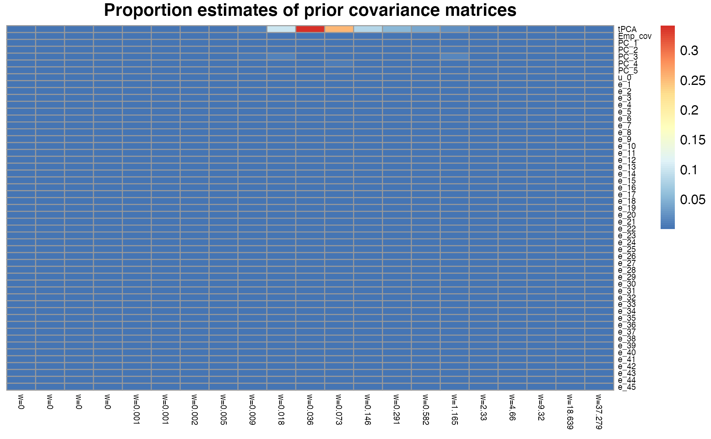
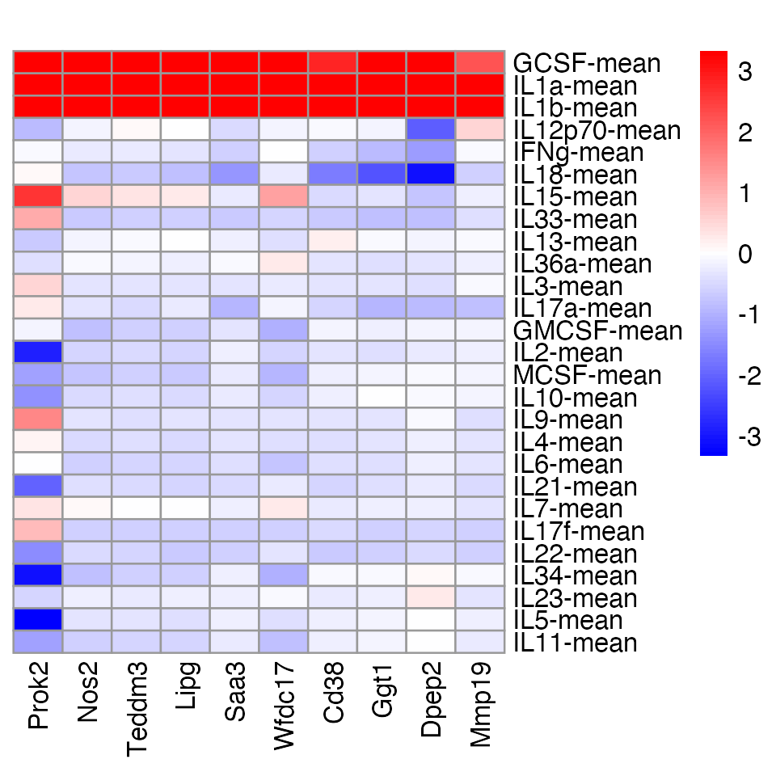
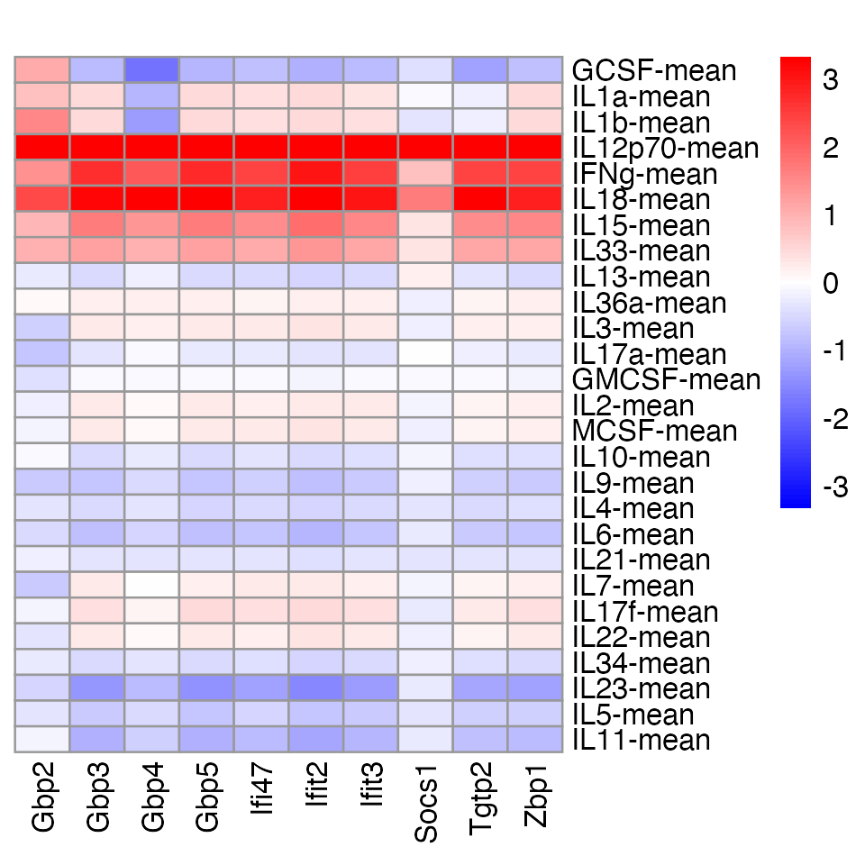

vignettes/intro_poisson_mash.Rmd
intro_poisson_mash.RmdThis vignette illustrates how to use Poisson multivariate adaptive shrinkage to analyze a data set. Poisson mash was developed for multi-condition differential expression analysis with single-cell RNA-sequencing (scRNA-seq) data in which gene expression is measured in many (e.g., dozens) of different conditions. The aim is to detect which genes are differentially expressed (DE) and to estimate expression differences (log-fold changes) among multiple conditions. This approach makes use of the multivariate adaptive shrinkage (mash) prior.
We illustrate this approach by analyzing scRNA-seq data for learning about the effects of cytokine stimulation on gene expression. We will work through the Poisson mash analysis step-by-step.
First, we load the R packages needed to run the analysis.
We also set the random number generator seed to ensure that the results are reproducible.
set.seed(1)To run Poisson mash, you need to provide: (1) a matrix of UMI counts, stored as a \(J \times N\) matrix \(Y\) with entries \(y_{ji}\), where \(i = 1, \dots,N\) indexes cells and \(j=1,\dots,J\) indexes genes; and (2) a vector of length \(n\) in which the \(i^{\mathrm{th}}\) element gives the condition label of cell \(i\). We denote the number of conditions by \(R\). (\(R\) should be much larger than 2.)
The original data contained counts for 13,362 cells, 8,543 genes and 45 conditions (44 cytokine treatments plus one control). For the this vignette, we will use subset (1,936 cells, 2,158 genes, 12 conditions), but later we will inspect the results obtained from running Poisson mash on the full data set.
data(neutrophils_subset)
Y <- neutrophils_subset$Y
conditions <- neutrophils_subset$conditions
dim(Y)
conditions <- as.factor(conditions)
table(conditions)
# [1] 2158 1936
# conditions
# IL10 IL12p70 IL18 IL1a IL1b IL2 IL3 IL4 IL5 IL6
# 82 198 254 392 251 109 105 133 81 122
# IL7 IL9
# 105 104After loading in the data, we compute the cell-specific size factors. This can be done in various ways. The simplest option is to take the sum of the counts \(y_{ji}\) across all genes in each cell \(i\). Here we take a deconvolution-based approach implemented in the scran package:
clusters <- quickCluster(Y)
si <- calculateSumFactors(Y,clusters = clusters)
names(si) <- colnames(Y)Next, we create a data object for poisson mash analysis using the
function pois_mash_set_data.
dat <- pois_mash_set_data(Y,conditions,si)By default, Poisson mash assumes a gene-specific baseline expression level, \(\mu_j\), that is shared across all conditions.
(Poisson mash can also handle the more complex setting in which the
\(R\) conditions arise from \(m = 1, \dots, M\) subgroups, and each
subgroup has its own baseline, \(\mu_{jm}\). For example, one may want to
perform a DE analysis across multiple treatment conditions, jointly for
multiple cell types. In this case, \(M\) is the number of cell types, and \(R\) represents the total number of
combinations of treatment conditions and cell types. Please refer to the
documentation for the function pois_mash_set_data to see
how to do this.)
Unwanted variation present in the data can induce dependence among gene-wise tests and confound the DE analysis. In some cases, the confounding variables are known, such as when these capture batch effects. More often, the unwanted variation is due to unmeasured factors. Here we estimating the confounding variables using glmpca.
design <- model.matrix(~conditions)
fit.glmpca <- glmpca(Y = as.matrix(Y),X = design[,-1],L = 4,fam = "nb2",
sz = si,ctl = list(minIter = 1,maxIter = 20,
verbose = TRUE))
Fuv <- as.matrix(fit.glmpca$loadings)For this vignette, we ran glmpca for only 20 iterations,
but typically it is better to perform more iterations (100, or perhaps
more).
We first fit Poisson mash under the assumption of no DE to get sensible initial estimates of the other model parameters, including the gene-specific baseline expressions \(\mu_j\). (See the paper for details.)
prefit <- pois_mash_prefit(dat,ruv = TRUE,Fuv = Fuv,verbose = TRUE)Let the \(R \times 1\) vector \(\beta_j = (\beta_{j1}, \dots, \beta_{jR})'\) denote the true DE effects of each of the \(R\) conditions relative to the baseline expression \(\mu_j\) for gene \(j\). We assume that \(\beta_j\) follows a “mash prior”, which is a mixture of multivariate normal distributions: \[ p(\beta_j; \pi, U) = \sum_{k=1}^K \sum_{l=1}^L \pi_{kl} N_R(\beta_j; 0, w_l U_k). \] In the mash prior, \(w_l\) is a pre-specified grid of scaling coefficients, spanning from very small to very large to capture the full range of possible DE effect sizes; \(U_k\) is a set of covariance matrices, each of which capture a different pattern of covariation across conditions; \(\pi_{kl}\) are mixture proportions that are estimated from the data during model fitting.
To use Poisson mash, you need to specify these prior covariance matrices. This may include “canonical” covariance matrices that represent, for example, DE specific to a condition; and “data-driven” covariance matrices that are learned from the data and can capture arbitrary patterns of DE among conditions.
For the canonical matrices, here we consider the matrices capturing
condition-specific effects for each of the \(R\) conditions. These matrices can be
generated using the pois_cov_canonical function:
ulist.c <- pois_cov_canonical(dat)Data-driven covariance matrices are estimated using a three-step
process: (1) initialization, (2) refinement, (3) diagonal entry
modification. The initialization phase is implemented by the function
pois_cov_init. To estimate data-driven covariance matrices,
we only use the subset of genes containing “strong signals”; that is,
the genes that are considered DE by a multinomial goodness-of-fit test.
The selection of genes with strong signals is implicitly performed by
the call to pois_cov_init, e.g., setting
cutoff = 3 selects the genes for which the magnitude of
z-score (inverted from the p-value of the goodness-of-fit test) exceeds
3.
res.pca <- pois_cov_init(dat,cutoff = 3)The refinement phase refines the initial estimates of data-driven
covariance matrices using the Extreme Eeconvolution (ED) algorithm, and
is implemented by the function pois_cov_ed. As in the
initialization phase, only data from the genes with strong signals are
used. It should be noted that only data-driven covariance matrices need
to be refined, so they need to be distinguished from the canonical
covariance matrices in the pois_cov_ed call using the
argument ulist.dd. For the purposes of this vignette, we
just ran pois_cov_ed for 10 iterations, but we recommend
performing more iterations when analyzing your own data (the default
number of iterations is 500).
R <- ncol(dat$X)
# Merge data-driven and canonical rank-1 prior covariance matrices.
ulist <- c(res.pca$ulist,ulist.c)
# Specify whether a rank-1 prior covariance matrix is data-driven
# or not (note all full-rank covariance matrices are data-driven
# so do not need this specification).
ulist.dd <- c(rep(TRUE,length(res.pca$ulist) - 1),rep(FALSE,R + 1))
# Run ED on the genes with strong signals.
fit.ed <- pois_cov_ed(dat,subset = res.pca$subset,Ulist = res.pca$Ulist,
ulist = ulist,ulist.dd = ulist.dd,ruv = TRUE,
Fuv = Fuv,verbose = TRUE,init = prefit,
control = list(maxiter = 10))The modification phase adds a small constant \(\epsilon^2\) (e.g., 0.01) to the diagonal
entries of the estimated data-driven covariance matrices. This step is
done to alleviate issues of inflated local false sign
rates (lfsr) (the lfsr is analogous to but typically more more
conservative than a local false discovery rate). Similarly, only
data-driven covariance matrices require such modification, and this
information is encoded in the vector epsilon2.G and will be
passed to the function call in the next step.
# add epsilon2*I to each full-rank data-driven prior covariance matrix
# all the full-rank covariance matrices are data-driven and need this modification
Ulist <- fit.ed$Ulist
H <- length(Ulist)
for(h in 1:H){
Uh <- Ulist[[h]]
Uh <- Uh/max(diag(Uh))
Ulist[[h]] <- Uh + 1e-2*diag(R)
}
# add epsilon2*I to each rank-1 data-driven prior covariance matrix
# only a subset of the rank-1 covariance matrices are data-driven and need this modification
G <- length(fit.ed$ulist)
epsilon2.G <- rep(1e-8, G)
names(epsilon2.G) <- names(fit.ed$ulist)
epsilon2.G[ulist.dd] <- 1e-2Now we are ready to fit the Poisson mash model to data from all
genes, which is implemented by the function pois_mash.
By default, differences in expression are measured relative to the
mean across all conditions. To change this, see the
pois_mash input arguments C and
res.colnames.
res <- pois_mash(data = dat,Ulist = Ulist,ulist = fit.ed$ulist,
ulist.epsilon2 = epsilon2.G,gridmult = 2.5,ruv = TRUE,
Fuv = Fuv,rho = prefit$rho,verbose = TRUE,
init = list(mu = prefit$mu,psi2 = prefit$psi2),
control = list(maxiter = 10,nc = 2)) For this vignette, we ran pois_mash for only 10
iterations, but in practice we recommend setting
maxiter = 100, or perhaps more.
We will next look at the results, which are stored in the
res object produced by the call to pois_mash.
Recall that we illustrate how to fit the Poisson mash model using a
subset of the neutrophils data to save time. Here we load in the Poisson
mash fit to the entire neutrophils dataset.
data(neutrophils_pois_mash_ruv_fit)The output contains posterior summaries of the condition-specific DE
effects relative to the reference condition specified by the user,
including posterior means and posterior standard deviations of the DE
effect sizes (log-fold changes) and measures of significance (lfsr), for
each gene in the dataset. These DE effect posterior summaries are stored
in the result component.
# Transform DE effect estimates to the scale of log2 fold change from natural log scale.
neutrophils_pois_mash_ruv_fit$result$PosteriorMean[1:5,1:5]/log(2)
# Ctrl_2-mean CCL20-mean CXCL1-mean CCL22-mean CXCL5-mean
# Mrpl15 -0.034042592 -0.007468183 0.0104375255 -0.0212980437 -0.017696220
# Lypla1 -0.009057545 -0.002816239 -0.0312773830 -0.0100671020 -0.011641034
# Tcea1 0.006406279 0.003163708 0.0117792404 0.0112956807 0.007417445
# Atp6v1h 0.005641873 0.004324441 -0.0009984417 0.0001755186 0.002388297
# Rb1cc1 0.005531303 0.010590542 -0.0071790326 0.0060939489 0.003342450
# Obtain gene-specific, condition-specific lfsr for detecting gene-condition DE effects.
neutrophils_pois_mash_ruv_fit$result$lfsr[1:5,1:5]
# Ctrl_2-mean CCL20-mean CXCL1-mean CCL22-mean CXCL5-mean
# Mrpl15 0.2527081 0.4012463 0.4501408 0.3236194 0.3458751
# Lypla1 0.4041496 0.4586630 0.2824110 0.3962331 0.3803850
# Tcea1 0.4273815 0.4727043 0.3991172 0.3839887 0.4144509
# Atp6v1h 0.4512667 0.4597141 0.4917574 0.4894398 0.4710016
# Rb1cc1 0.4402427 0.3958559 0.4170690 0.4337283 0.4628668We can find the number of DE genes, which are defined as genes having lfsr less than \(\alpha\) in at least one condition, where \(\alpha\) is a threshold specified by the user (e.g., 0.05).
lfsr <- neutrophils_pois_mash_ruv_fit$result$lfsr
# Get the indices of identified DE genes.
min.lfsr <- apply(lfsr,1,min)
# Order genes by significance based on mininum lfsr across conditions.
rows <- order(min.lfsr)
lfsr <- lfsr[rows,]
min.lfsr <- min.lfsr[rows]
de.genes <- which(min.lfsr < 0.05)
# Get the total number of DE genes.
length(de.genes)
# [1] 2636The model parameter estimates are stored in the
pois.mash.fit component. In particular, let us look at
\(\pi_{kl}\), the estimates of the
mixture proportions for combinations of different scaling coefficients
\(w_l\) and prior covariance matrices
\(U_k\):
pheatmap(neutrophils_pois_mash_ruv_fit$pois.mash.fit$pi, cluster_rows=FALSE, cluster_cols=FALSE, fontsize_row=6, fontsize_col=6, main="Proportion estimates of prior covariance matrices")
The data-driven covariance matrix “tPCA” has by far the largest proportion estimate (91%; summed over all scaling coefficients). We plot the correlation heatmap for this covariance matrix, which captures the most frequent pattern of sharing of DE effects across cytokine treatments in the neutrophils data. For space reason, here we present the correlation heatmap only for selected conditions.
data(condition_colors)
U <- neutrophils_pois_mash_ruv_fit$pois.mash.fit$Ulist[[1]]
colnames(U) <- colnames(neutrophils_pois_mash_ruv_fit$pois.mash.fit$mu)
rownames(U) <- colnames(neutrophils_pois_mash_ruv_fit$pois.mash.fit$mu)
idx.trts <- match(names(condition_colors),colnames(neutrophils_pois_mash_ruv_fit$pois.mash.fit$mu))
corr <- cov2cor(U[idx.trts,idx.trts])
pheatmap(corr,cluster_rows = FALSE,cluster_cols = FALSE,angle_col = 90,
fontsize = 8,main = "Correlation matrix for\nthe major prior covariance (weight = 91%)")This correlation heatmap suggests strong sharing of DE effects among two groups of cytokines (1) IL-1\(\alpha\), IL-1\(\beta\), G-CSF and (2) IL-12 p70, IFN-\(\gamma\), IL-18, IL-15, IL-33. We then plot the log-fold changes for a few DE genes that either show effect sharing among (1) or (2), where the reference condition is the mean across all conditions.
### define the color map for LFC
cols <- colorRampPalette(c("blue","white","red"))(99)
brks <- seq(-log(10), log(10), length=100)/log(2)
### plot a few DE genes that show effect sharing among the first group of cytokines (taken from Figure 7 in our paper)
genes1 <- c("Prok2", "Nos2", "Teddm3", "Lipg", "Saa3", "Wfdc17", "Cd38", "Ggt1", "Dpep2", "Mmp19")
pheatmap(t(neutrophils_pois_mash_ruv_fit$result$PosteriorMean[genes1, idx.trts])/log(2), cluster_rows = FALSE, cluster_cols = FALSE, color = cols, breaks = brks, angle_col = 90, main = "")
### plot a few DE genes that show effect sharing among the second group of cytokines (taken from Figure 7 in our paper)
genes2 <- c("Gbp2", "Gbp3", "Gbp4", "Gbp5", "Ifi47", "Ifit2", "Ifit3", "Socs1", "Tgtp2", "Zbp1")
pheatmap(t(neutrophils_pois_mash_ruv_fit$result$PosteriorMean[genes2, idx.trts])/log(2), cluster_rows = FALSE, cluster_cols = FALSE, color = cols, breaks = brks, angle_col = 90, main = "")
This is the version of R and the packages that were used to generate these results.
sessionInfo()
# R version 3.6.2 (2019-12-12)
# Platform: x86_64-apple-darwin15.6.0 (64-bit)
# Running under: macOS Catalina 10.15.7
#
# Matrix products: default
# BLAS: /Library/Frameworks/R.framework/Versions/3.6/Resources/lib/libRblas.0.dylib
# LAPACK: /Library/Frameworks/R.framework/Versions/3.6/Resources/lib/libRlapack.dylib
#
# locale:
# [1] en_US.UTF-8/en_US.UTF-8/en_US.UTF-8/C/en_US.UTF-8/en_US.UTF-8
#
# attached base packages:
# [1] parallel stats4 stats graphics grDevices utils datasets
# [8] methods base
#
# other attached packages:
# [1] poisson.mash.alpha_0.1-98 pheatmap_1.0.12
# [3] glmpca_0.2.0 scran_1.14.6
# [5] SingleCellExperiment_1.8.0 SummarizedExperiment_1.16.1
# [7] DelayedArray_0.12.3 BiocParallel_1.18.1
# [9] matrixStats_0.63.0 Biobase_2.46.0
# [11] GenomicRanges_1.38.0 GenomeInfoDb_1.22.1
# [13] IRanges_2.20.2 S4Vectors_0.24.4
# [15] BiocGenerics_0.32.0 Matrix_1.3-4
#
# loaded via a namespace (and not attached):
# [1] bitops_1.0-6 fs_1.5.2 RColorBrewer_1.1-2
# [4] rprojroot_2.0.3 tools_3.6.2 bslib_0.3.1
# [7] utf8_1.1.4 R6_2.4.1 irlba_2.3.3
# [10] vipor_0.4.5 DBI_1.1.0 colorspace_1.4-1
# [13] tidyselect_1.1.1 gridExtra_2.3 compiler_3.6.2
# [16] cli_3.5.0 BiocNeighbors_1.2.0 desc_1.2.0
# [19] sass_0.4.0 scales_1.1.0 mvtnorm_1.0-11
# [22] SQUAREM_2017.10-1 mixsqp_0.3-48 pkgdown_2.0.7
# [25] systemfonts_1.0.2 stringr_1.4.0 digest_0.6.23
# [28] rmarkdown_2.21 XVector_0.26.0 scater_1.14.6
# [31] pkgconfig_2.0.3 htmltools_0.5.4 highr_0.8
# [34] invgamma_1.1 fastmap_1.1.0 limma_3.42.2
# [37] rlang_1.0.6 DelayedMatrixStats_1.6.1 jquerylib_0.1.4
# [40] generics_0.0.2 jsonlite_1.7.2 dplyr_1.0.7
# [43] RCurl_1.98-1.2 magrittr_2.0.1 BiocSingular_1.2.2
# [46] GenomeInfoDbData_1.2.2 Rcpp_1.0.8 ggbeeswarm_0.6.0
# [49] munsell_0.5.0 fansi_0.4.0 abind_1.4-5
# [52] viridis_0.5.1 lifecycle_1.0.3 stringi_1.4.3
# [55] yaml_2.2.0 edgeR_3.28.1 MASS_7.3-51.4
# [58] zlibbioc_1.32.0 grid_3.6.2 dqrng_0.2.1
# [61] crayon_1.4.1 lattice_0.20-38 locfit_1.5-9.4
# [64] knitr_1.37 pillar_1.6.2 igraph_1.2.5
# [67] glue_1.4.2 evaluate_0.14 vctrs_0.3.8
# [70] gtable_0.3.0 purrr_0.3.4 assertthat_0.2.1
# [73] ashr_2.2-57 ggplot2_3.3.6 xfun_0.36
# [76] rsvd_1.0.2 ragg_0.3.1 viridisLite_0.3.0
# [79] truncnorm_1.0-8 tibble_3.1.3 poilog_0.4
# [82] beeswarm_0.2.3 memoise_1.1.0 seqgendiff_1.2.2
# [85] statmod_1.4.34 ellipsis_0.3.2